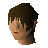

Bartender

| Config name | rustyanchor_bartender |
| NPC id | 734 |
| Combat level | hidden |
| Options | Talk-to |
| Wander range | 5 tiles from spawn |
| Area folder | area_port_sarim |
| Defined in | scripts/areas/area_port_sarim/configs/port_sarim.npc |
Bartender
I could get a beer from him.
Show all 1 spawn on the world map → Open in knowledge graph →
Locations
| Area | Coordinates | Level | Count | Map |
|---|---|---|---|---|
| Market | 3045, 3257 | 0 | 1 | view |
Dialogue
BartenderCongratulations! Here you go.
PlayerCould I buy a beer please?
BartenderSure, that will be 2 gold coins please.
PlayerI don't have enough coins.
PlayerOk, here you go.
You buy a pint of beer!
PlayerNot very busy in here today, is it?
BartenderNo, it was earlier. There was a guy in here saying the goblins up by the mountain are arguing again. Of all things, about the colour of their armour.
BartenderKnowing the goblins, it could easily turn into a full blown war. Which wouldn't be good. Goblin wars make such a mess of the countryside.
PlayerWell, if I have time, I'll see if I can go and knock some sense into them.
PlayerI'm doing Alfred Grimhand's Barcrawl.
BartenderAre you sure? You look a bit skinny for that.
PlayerJust give me whatever I need to drink here.
BartenderOk one Black Skull Ale coming up, 8 coins please.
PlayerI don't have 8 coins with me.
PlayerHave you heard any more rumours in here?
BartenderNo, it hasn't been very busy lately.
Referenced in scripts
scripts/areas/area_port_sarim/scripts/bartender.rs2